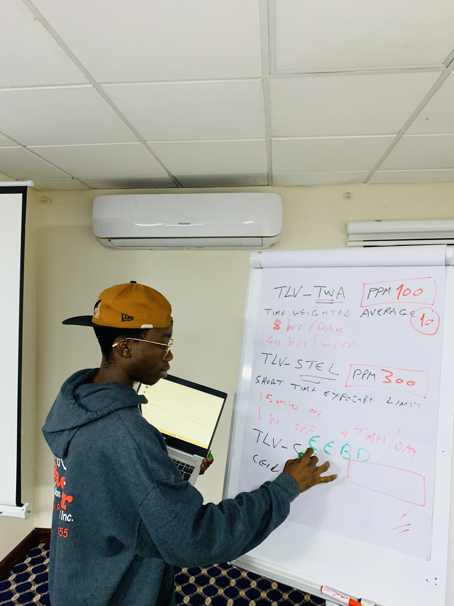
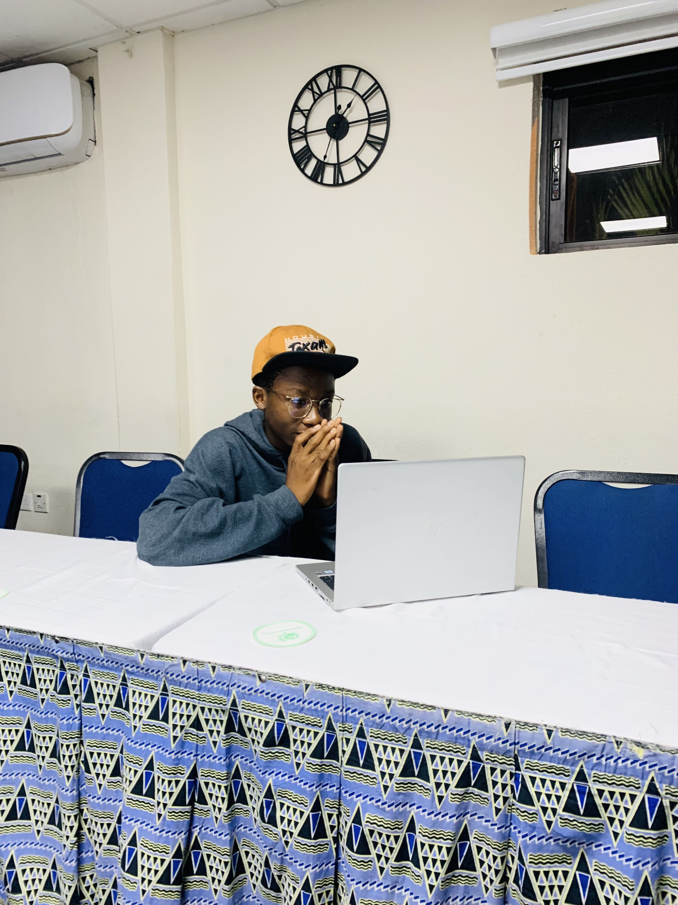
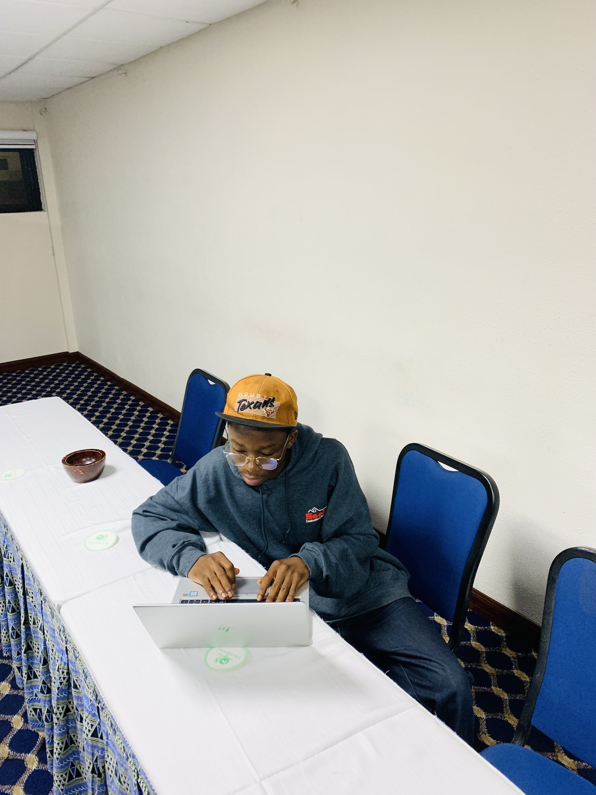

How It All Began
I still remember the day I first heard the term "coding." It was during a career guidance seminar in high school. The speaker described coding as the art of telling computers what to do. At the time, it felt like something only geniuses could master, and I never thought I could be one of them. But a seed of curiosity was planted that day.
My journey began in my final year of high school when a friend introduced me to basic HTML. I was fascinated by how a few lines of code could turn into a colorful webpage. At first, I didn’t understand much, but the idea of creating something from scratch intrigued me. Late at night, I would borrow a laptop from my brother to practice what I had learned, experimenting with tags and styling.


The Struggles and Breakthroughs
The early days were anything but easy. I struggled with the basics, and there were moments when I felt like giving up. The syntax errors were frustrating, and debugging felt like a never-ending maze. But every small success – like correctly aligning a paragraph or changing the background color – fueled my determination.
Things took a turn when I discovered FreeCodeCamp. Their step-by-step tutorials and interactive challenges made learning both engaging and accessible. For the first time, I felt like coding wasn’t just for "tech geniuses" – it was for anyone willing to learn. I started with HTML, then moved on to CSS, and eventually dived into JavaScript. Each language felt like a new puzzle to solve, and I loved the challenge.
.png)
Finding My Passion
Over time, coding became more than just a skill; it became my passion. I found joy in creating websites and bringing ideas to life. One of my first projects was a simple portfolio site showcasing my journey. It wasn’t perfect, but it was mine, and it represented hours of hard work and learning.
As I delved deeper, I realized that coding is not just about building websites or apps – it’s about solving problems and making an impact. This realization gave me a sense of purpose and motivated me to keep pushing my boundaries.
.jpg)
What I've Learned
Looking back, my coding journey has taught me more than just technical skills. It’s taught me patience, resilience, and the value of consistency. Coding isn’t about avoiding errors – it’s about learning from them. Every bug I’ve fixed has made me a better problem-solver and thinker.
Today, I’m proud of how far I’ve come, but I know this is just the beginning. There’s so much more to learn and achieve, and I’m excited to see where this journey takes me next. To anyone reading this, if you’re thinking about starting your own coding journey, my advice is simple: take that first step. You’ll be amazed at what you can achieve.